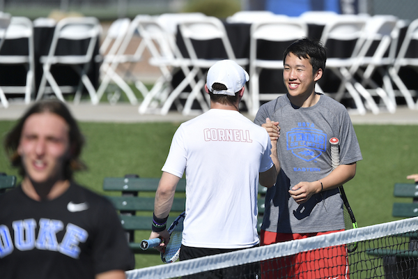

Tryouts
Do you LOVE tennis? Did you play competitively in high school, but don't want the stress and time commitment of a varsity sport? Cornell Club Tennis might be the right fit for you! On the Club Tennis Team, we define and deliver a collegiate tennis experience that is more structured and organized than recreational tennis or intramural, but without the time commitments and pressure of Varsity tennis. It is an experience that is uniquely Club!
Tryout Dates
Tryouts for the 2019-2020 season have ended. Check back next Fall to join the team!
Member Requirements & Expectations

- Attend tennis practice at least once a week on either Tuesdays, Fridays, and Sundays from 8:30 to 10:00PM at Reis Tennis Center.
- Practices will be held in co-ed teams where you will play singles and/or doubles
- Inability to meet practice requirements will result in removal from the club
- Compete intercollegiately on the official USTA Tennis on Campus Circuit
- Compete for national titles in venues such as:
- Bethany Beach, DE
- Hilton Head, SC
- Westchester, NY
- Cary, NC
- Tuscon, AZ
- Participate in service events each semester, like our annual Carnival!
​